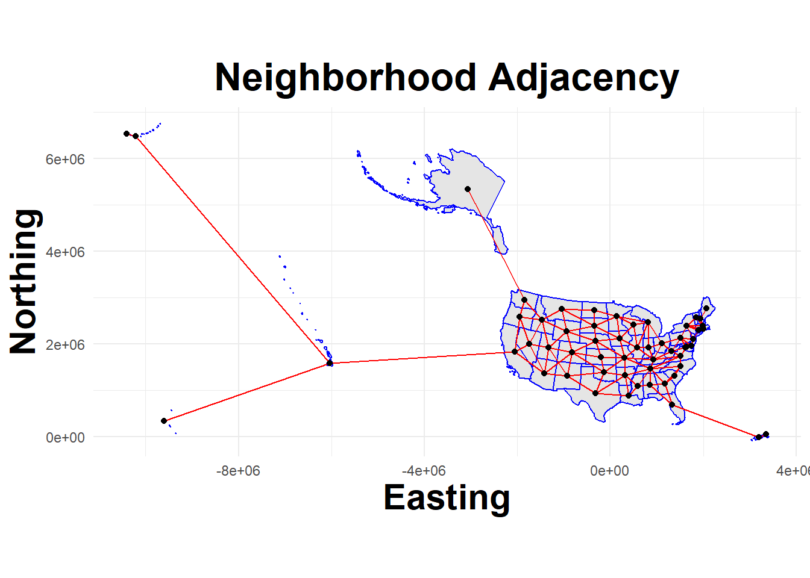
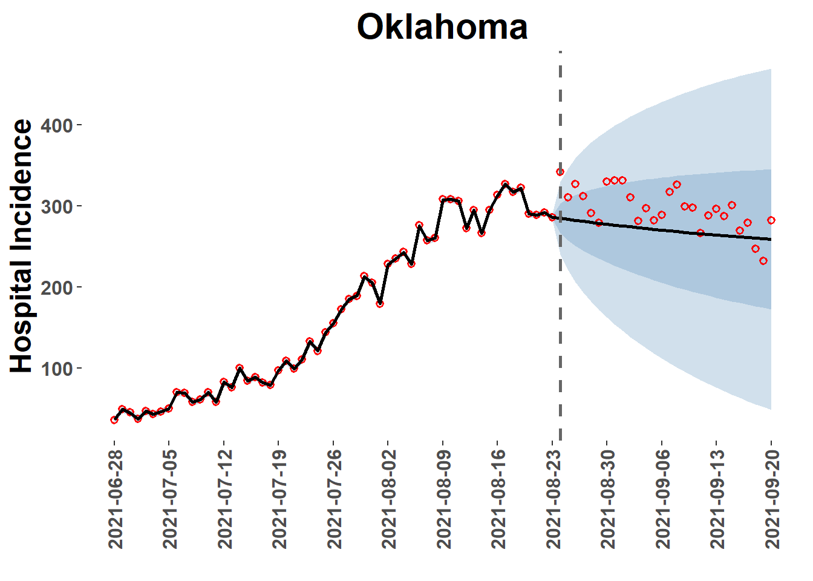
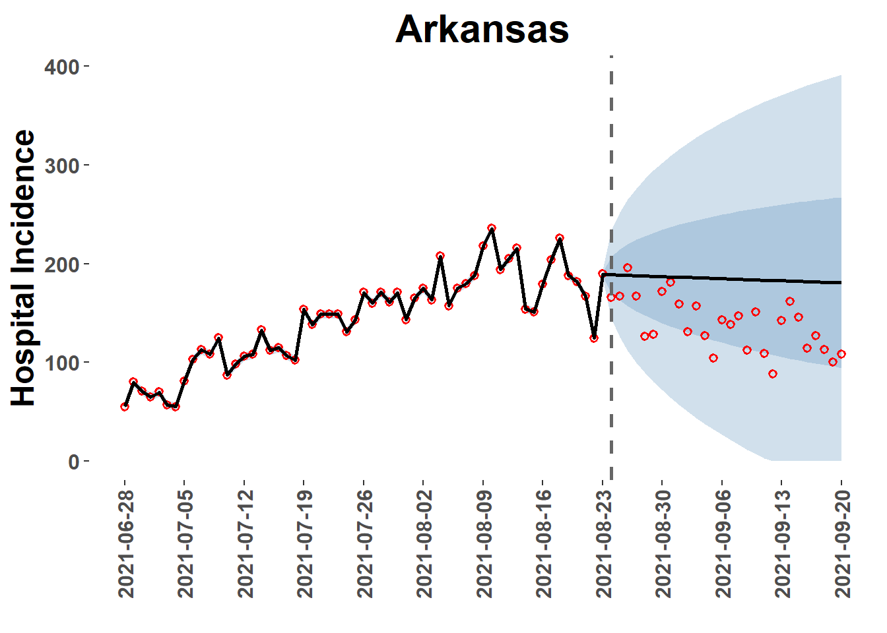

CovidCAR is intended to facilitate Covid19 model building, ensembling, and evalutaion
Published
May 18, 2023
Overview
This introduction briefly outlines core functions used to preprocess observation data, build spatial-temporal models, and post-process model outputs. Its purpose is to demonstrate a standard workflow not to provide an in depth examination of functions or model building techniques.
Load needed packages
A few of these packages are not available on CRAN and will need to be installed from other locations.
Hide code
#comments and promptsoptions(dplyr.summarise.inform =FALSE)library(cli)#wranglinglibrary(tidyverse)library(lubridate)library(arrow)library(Hmisc)library(yaml)#spatial manipulationlibrary(sp)library(sf)library(spdep)library(rgeos)library(igraph)library(maptools)library(mapproj)#census datalibrary(censusapi)#forecast datalibrary(zoltr) #Not available on CRAN#remotes::install_github("reichlab/zoltr")library(covidHubUtils) #Not available on CRAN#remotes::install_github("reichlab/covidHubUtils")#inferencelibrary(INLA) #Not available on CRAN#install.packages("INLA",repos=c(getOption("repos"),#INLA="https://inla.r-inla-download.org/R/stable"), dep=TRUE)library(EpiEstim)library(forecast)
The setup_analysis() function defines key date thresholds for model training and forecast horizon periods and should always be run before using any other functions in the CovidCAR package. The dates are written to a yaml file for use by other functions.
The function also allows for recording directory paths to (optionally) write outputs outside of the working directory or to pull previously cached observation data (cache as created with Covid19Forecast.v1).
→ Your local cache will be available to get_covid19_obs()
→ Analysis outputs will be written to C:/Users/unp7/Desktop/Misc/test_CovidCAR/2021-08-23-CovidCAR-run2023-05-23
Define Spatial Domain
The download_boundaries() function pulls US State and territorial boundaries (ESRI shapefiles) from sources in the public domain. Some basic projection is performed, the shapefile is converted to a SpatialPolygonsDataFrame, and data attributes for a location identifier (‘Region’) and name (‘State’) are appended to the object.
NOTE: The function includes an option to download county boundaries (unit=“county”) but there are some timeout issues that need to be resolved due to large file size.
Hide code
States <-download_boundaries(unit ="state")
→ Downloading polygon files...
Reading layer `us-state-boundaries' from data source
`C:\Users\unp7\Desktop\Misc\test_CovidCAR\2021-08-23-CovidCAR-run2023-05-23\polygons'
using driver `ESRI Shapefile'
Simple feature collection with 56 features and 20 fields
Geometry type: MULTIPOLYGON
Dimension: XY
Bounding box: xmin: -179.2311 ymin: -14.60181 xmax: 179.8597 ymax: 71.44069
Geodetic CRS: WGS 84
The get_neighbors() function is used to identify polygons (States and Territories in this example) that are located next to each other. Neighbor information is recorded in a matrix (dimensions: location*location) that is included with the CAR model. Estimates for any one location are then ‘conditional’ on the estimates for surrounding locations.
NOTE: Polygons representing locations such as Hawaii and Guam are isolated from other locations (termed ‘islands’) and can be problematic. One option in this situation is to force connections between locations; the function’s ‘connect’ option will force connections between islands and other locations based on proximity.
Example: Islands with “no links”
Hide code
nb_islands =get_neighbors(States, connect=FALSE)summary(nb_islands) #note that "7 regions with no links"
Neighbour list object:
Number of regions: 56
Number of nonzero links: 224
Percentage nonzero weights: 7.142857
Average number of links: 4
7 regions with no links:
1 24 32 33 38 42 54
Link number distribution:
0 1 2 3 4 5 6 7 8
7 1 4 9 9 10 12 2 2
1 least connected region:
13 with 1 link
2 most connected regions:
49 56 with 8 links
Neighbour list object:
Number of regions: 56
Number of nonzero links: 242
Percentage nonzero weights: 7.716837
Average number of links: 4.321429
Link number distribution:
1 2 3 4 5 6 7 8
5 3 10 12 10 11 3 2
5 least connected regions:
1 13 38 42 54 with 1 link
2 most connected regions:
49 56 with 8 links
View mapped adjacency
The plot_neighbors() function overlays adjacency connections on mapped location boundaries.
Hide code
plot_neighbors(States, nb_islands)
Regions defined for each Polygons
Hide code
plot_neighbors(States, nb_coerced)
Regions defined for each Polygons

Convert to INLA Graph The nb2INLA() and inla.read.graph() functions are provided by the INLA package.
Hide code
nb2INLA("J", nb_coerced)J =inla.read.graph("J")
Retrieve Observation Data
The get_covid19_obs() function downloads hospital incidence data for a specified data range.
The source options for data to be retrieved:
The covidcast package
From a local cache as created by the covid19Forecasts package (i.e., refactored pipeline pkg)
From test data available from the package itself (sample from summer 2021)
Add Spatial Index
The append_region_index() function matches location names in the observation data to the Region index in the polygon boundaries object, which also corresponds with the adjaceny matrix. The Region index is added as a column to the observations as is a new trn_tst column that is coded with either a trn or tst nominal indicator to distinguish time periods used for model training (observed) and testing (not observed).
The create_forecast_template() function ensures that each location-time combination in the analysis is represented in the data ingested by the model. In the case of model runs using only historic observations, this function basically returns the original input but with some column names adjusted. This because the full date range was already represented. However, in the case of future dates where observations are not yet available, this function will add a row for each day through the forecast horizon coding the observed incidence value as NA as a placeholder.
Hide code
train_data =create_forecast_template(train_data)
Additional Covariates
Demo models in this example are fairly simple but in many cases users will want to add additional predictors, signals, or covariates (independent variables). This section of the script demonstrates how to (1) pull and add demographic variables from the American Community Survey (ACS) and how to (2) add Rt estimates generated from the EpiEstim package.
Demographic Data
The getPovertyPop() function provides a wrapper function for the getCensus package for loading American Community Survey (ACS) data from the U.S. Census Bureau. In this example, an API key (‘secret_api’) is used to pull the percent of each state’s total population in poverty (SAEPOVRTALL_PT) and the number of individuals over the age of 55yrs (given in the vars_pop option).
train_data =left_join(train_data, PovPop_data, by ="location")
Rt Estimation
The Rt_projection() function combines the estimate_R() function from the EpiEstim package with simple timeseries models to forecast Rt estimated over the model training period across the forecast horizon (28 days in the future). Both the ‘raw’ Rt estimate (‘Rt_raw’) for the observation period only and the forecast values (‘Rt’) are added to the dataframe.
Forecast models include:
simple ARIMA model using the forecast package (method=“arima”)
an order-2 random walk with noise and trend using the INLA package (method=“dlm)
NOTE: This is an experimental function and the “dlm” method is used as an example. Models later in this demo will use the Rt_raw value to forecast concurrently with incidence estimation.
Model parameters, inputs, and covariates will vary from model-to-model and user-to-user but ultimately all need to be combined in a single object that can be ingested by the the inference software, INLA in this case. The code below modifies the train_data dataframe to perform any desired scaling and to add several spatial and temporal indices.
Ordered integers are used as indices to define timesteps (days, weeks, etc), locations (‘Region’), and space*time combinations (e.g., ‘ID.Region.Wk’ in the next chunk). The modeling approach is hierarchical, so some indices may be used in multiple levels. But, each index name must be unique therefore some indices are copied and given slighly different names.
Once data is organized, it is reformatted as a list object called a ‘datastack’ that is passed to the inference software. Although a daraframe might be more intuitive, a list object is used so that model inputs can be of different lengths.
Clean Dataframe
The time_index() function is used to recode a date vector to the desired timestep duration (2-day steps, 1 week steps, etc).
The response variable may differ between models. In this case, copying hospital incidence (counts) to a new column, standardizing the distribution, and ensuring that observations for the forecast horizon are coded as NA. Retaining the scaling object and rewriting as function obs_scale() to transform model outputs back to the observation scale later.
Again, response variables are specific to individual model setup so could be scaled differently or not at all to be fit with a different likelihood (Poisson, NegBinomial, etc). Keeping it simple here.
Hide code
train_data$resp =ifelse(train_data$trn_tst =="train", train_data$value, NA) #Set obs value to NA for forecasts periodsresp_scale_obj =scale(train_data$resp, scale=T, center=T) #scaled objectobs_scale =function(r)r*attr(resp_scale_obj,'scaled:scale') +attr(resp_scale_obj, 'scaled:center') #transform back to observation scaletrain_data$nrm_resp =as.numeric(resp_scale_obj)
Format as a Datastack
In this example, data could remain as a dataframe and passed to INLA directly, but as a matter of practice, it is better to format as a list object (datastack).
Hide code
nrm.lst =list(list(intercept1 =rep(1, dim(train_data)[1])), #custom interceptlist(pov_pct = train_data[,"s_pov"], #desired covariates and indices belowpop = train_data[,"s_pop"], #formatting as nrm.lst = list()Rt_raw = train_data[,"Rt_raw"],Rt_raw.1 = train_data[,"Rt_raw"],Rt = train_data[,"Rt"],Rt.1 = train_data[,"Rt"],doy = train_data[,"doy"],doy.1 = train_data[,"doy.1"],doy.2 = train_data[,"doy.1"],int_week.1 = train_data[,"int_week.1"],int_week.2 = train_data[,"int_week.2"],int_week.3 = train_data[,"int_week.3"],threeday_indx.1 = train_data[,"threeday_indx.1"],fourday_indx.1 = train_data[,"fourday_indx.1"],fiveday_indx.1 = train_data[,"fiveday_indx.1"],eightday_indx.1 = train_data[,"eightday_indx.1"],biwek_indx.1 = train_data[,"biweek_indx.1"],Region.1 = train_data[,"Region.1"],Region.2 = train_data[,"Region.2"],Region.3 = train_data[,"Region.3"],Region.4 = train_data[,"Region.4"],Region.5 = train_data[,"Region.5"],Region_Wk = train_data[,"ID.Region.Wk"],dow = train_data[,"day"]))nrm.stk =inla.stack(data =list(Y = train_data$nrm_resp), #Y is response variableA =list(1,1), #option to include matrices, not used in this caseeffects = nrm.lst, #list object from abovetag ="nrm") #arbitrary name to index searches later #(multiple datastack used in complex models)
Model Priors and Formulae
Specifying all priors and formulas for desired models using R-INLA syntax. A deep-dive would be needed to describe in detail, which would be too time consuming for this workflow focused demonstration.
Formula 1: Random Walk plus noise for each location (i.e., state)
Hide code
Frm.1= Y ~-1+#remove default intercept intercept1 +#custom interceptf(doy.1, #order by time index (daily)constr=TRUE, #enforced zero meanmodel="rw1", #order-1 random walk with noisescale.model =TRUE, #additional internal scalinggroup = Region.1, #run rw1 model for groups based on location control.group=list(model="iid"), #groups are treated independentlyhyper=pc_rw2) #prior for rw2
Formula 2: Random Walk plus noise and trend for each location
Hide code
Frm.2= Y ~-1+ intercept1 +f(doy.1, constr=TRUE, model="rw1", scale.model =TRUE, group = Region.1, control.group=list(model="iid"), hyper=pc_rw2) +f(doy.2, model="linear", mean.linear =0, prec.linear =0.001) #add linear trend to rw1
Formula 3: Common spatial effect for timesteps but each location has separate autoregression
Hide code
Frm.3= Y ~-1+ intercept1 +f(Region.1, #location indexmodel="bym2", #spatial effect, Besag-York-Mollie model (the 2 indicates scaling) graph=J, #Adjacency graph to identify neighborsconstr=TRUE, #enforced zero meanhyper=bym_hyper) +#BYM priorf(doy.1, #order by time index (daily)model="ar1", #apply order-1 autoregressiveconstr=TRUE,group = Region.1, #run ar1 model for groups based on locationcontrol.group=list(model="iid"), #groups are treated independentlyhyper=pc_cor_ar1)
Formula 4: Separate spatial effect for each timestep (related by ar1) and each location has its own autoregressive term.
Hide code
Frm.4= Y ~-1+ intercept1 +f(Region.1, model="bym2", graph=J, constr=TRUE, group = doy, #time index, daily (create separate realizations of spatial covariate for each day)control.group=list(model="ar1"), #groups are related via an order-1 autoregressivehyper=bym_hyper) +#prior for BYMf(doy.1, model="ar1", constr=TRUE,group = Region.1, control.group=list(model="iid"), hyper=pc_cor_ar1)
Formula 5: As Formula 4 but with space-time interaction to capture location and time specific variation outside of modeled trends.
Hide code
Frm.5= Y ~-1+ intercept1 +f(Region.1, model="bym2", graph=J, constr=TRUE, group = doy, control.group=list(model="ar1"),hyper=bym_hyper) +f(doy.1, model="ar1", constr=TRUE,group = Region.1, control.group=list(model="iid"), hyper=pc_cor_ar1) +f(Region_Wk, #Index for all location*time combinations (space-time interaction)model="iid", #each location and time combination considered independentlyconstr=TRUE,hyper=pc_prec_iid)
Formula 6: As Formula 5 but adding covariate for variation due to day of week (e.g. Monday, Tuesday,…Sunday).
Hide code
Frm.6= Y ~-1+ intercept1 +f(Region.1, model="bym2", graph=J, constr=TRUE, group = doy, hyper=bym_hyper, control.group=list(model="ar1")) +f(doy.1, model="ar1", constr=TRUE,group = Region.1, control.group=list(model="iid"), hyper=pc_cor_ar1) +f(dow, #discrete variable indicating day of week, e.g. Monday, Tuesday,...Sundayconstr=TRUE,model="iid", #days of week may vary independentlygroup = Region.2, #variation attributed to days of week may differ by locationcontrol.group=list(model="iid"), hyper=pc_prec_iid) +f(Region_Wk, model="iid", constr=TRUE,hyper=pc_prec_iid)
Formula 7: Including Rt estimates as an experimental covariate. Forecast Rt trend estimated from the observation period (training period) to the future (28 days) using an autoregressive model.
Hide code
Frm.7= Y ~-1+ intercept1 + pov_pct + pop +f(Region.1, model="bym2", graph=J, constr=TRUE, group = doy, hyper=bym_hyper, control.group=list(model="ar1")) +f(doy.1, Rt_raw, #order by time index (daily) but weight each timestep by corresponding Rt_raw estimatemodel="ar1", #apply order-1 autoregressive to Rt weighted time index aboveconstr=TRUE,group = Region.2, control.group=list(model="iid"),hyper=pc_cor_ar1) +f(dow, constr=TRUE,model="iid",group = Region.3,control.group=list(model="iid"),hyper=pc_prec_iid) +f(Region_Wk, model="iid", constr=TRUE,hyper=pc_prec_iid)
Formula 8: As with Formula 8 but adding a random walk at a more coarse time scale (3 day steps) to reduce forecast decay.
Hide code
Frm.8= Y ~-1+ intercept1 + pov_pct + pop +#linear covariates for poverty and population over 55yrsf(Region.1, model="bym2", graph=J, constr=TRUE, group = doy, hyper=bym_hyper, control.group=list(model="ar1")) +f(threeday_indx.1, #time index, 3daysconstr=TRUE,model="rw2", #order-2 random walk with noisescale.model =TRUE,group = Region.2,control.group=list(model="iid"), hyper=pc_rw2) +f(doy.1, Rt_raw, model="ar1", constr=TRUE,group = Region.3, control.group=list(model="iid"),hyper=pc_cor_ar1) +f(dow, constr=TRUE,model="iid",group = Region.4,control.group=list(model="iid"),hyper=pc_prec_iid) +f(Region_Wk, model="iid", constr=TRUE,hyper=pc_prec_iid)
The run_model_list() function runs a series of models as specified in the formulas.list using the input data organized as a datastack (nrm.srk). The function runs each model sequentially and writes the executed models (models_out), formulas (formulas.list), priors (prior.list), datastack, and original dataframe (train_data) to an .RData in the analysis directory. The models_out object will also be available in the environment for further processing.
There are many customization options for inference but have opted to keep run_model_list() fairly simple for ease of use and maximum efficiency.
Addional run_model_list() options:
likelihood
If one likelihood is provided it will be applied to all models
A vector of likelihoods can be provided with order based on formulas.list
indicates if latencies (GMRF) should be retained for sampling
config=TRUE can be time intensive and dramatically slow model runs
CovidCAR has a post_sampling() function to facilitate sampling
verbose prints INLA algorithm process to screen during model runs
archive indicates to save model inputs and results to the analysis directory
model outputs will be written to a run_archive subdirectory
Run All Models
Hide code
formulas.list = formulas.list[c(1:4)] #short list for demo, fast run modelsmodels_out =run_model_list(formulas.list=formulas.list,dataStack=nrm.stk,likelihood ="gaussian",config=FALSE, verbose =FALSE, archive=TRUE)
Extract and Format Forecasts
The extract_forecasts() function pulls forecasts from models and saves them to a forecasts folder in analysis directory. The function returns a forecast_paths list object to the environment with file path names.
Forecasts are formatted to the specifications required for submission to the covid19-forecast-hub.
head(read.csv(forecast_paths[["rw1_trend"]])) #formatted for submission
forecast_date
location
target
target_end_date
type
quantile
value
2021-08-23
02
0 day ahead inc hosp
2021-08-23
quantile
0.01
18.04309
2021-08-23
02
1 day ahead inc hosp
2021-08-24
quantile
0.01
0.00000
2021-08-23
02
2 day ahead inc hosp
2021-08-25
quantile
0.01
0.00000
2021-08-23
02
3 day ahead inc hosp
2021-08-26
quantile
0.01
15.69078
2021-08-23
02
4 day ahead inc hosp
2021-08-27
quantile
0.01
47.97832
2021-08-23
02
5 day ahead inc hosp
2021-08-28
quantile
0.01
83.44559
View forecastsextract_forecasts() also returns a list (‘plot_paths’) of paths to plotting data from the extraction process. This data can be accessed from the plot_location() function, which provides a quick diagnostic plot of forecast for a specific location.
Note of Caution: If the ‘loc=’ option is left as NULL, all locations will be plotted to PDF file and saved in the ‘Reports’ folder of the analysis directory. This may be time consuming!
Hide code
OK_plot =plot_location(plot_path = plot_paths, model ="base_car", loc ="Oklahoma")OK_plot

Hide code
AR_plot =plot_location(plot_path = plot_paths, model ="base_car", loc ="Arkansas")AR_plot

Hide code
#plot_location(plot_path = plot_paths, model = "full_mod") #plots and saves all locations to a pdf file
Model Scoring
WIS Scores
The score_WIS() function calculates the WIS score for forecasts by model. Optional arguments can be included to indicate if files should be read from a directory (ingest = “path”), a dataframe in the environment (ingest = “dataframe”),or from a list object with individual file paths (ingest = “list”) as returned by extract_forecasts().
The ‘missing’ option can be used to specify how missing observation data should be handled; ‘remove’ from data or fill with ‘zero’.
Hide code
my_truth <- train_data %>%#Caution: my_truth may be different than your truth :)select(date, location, value)my_scores <-score_WIS(forecast_data = forecast_paths, truth=my_truth, ingest ="list", missing ="remove")
→ A total of 2668 predictions weren't evalauted due lack of truth data
The score_MAE() function works comparably to score_WIS() but is a simpler measure of model performance as it is based on only the point estimates from forecasts.
→ A total of 116 forecasts weren't evaluatd due lack of truth data
Hide code
my_mae
model
MAE
MAPE
maeRank
base_car
41.5
0.01251
1
car_time
41.8
0.01261
2
base_rw1
325.6
0.09818
3
rw1_trend
353.3
0.10652
4
Ensemble
The propose_weights() function assists with ensemble building by weighting models using a given performance metric. The function scales the raw model comparison metric and then builds the ensemble by multiplying each forecasts by its model-specific weight and summing across all included models. The resulting ensemble forecast is then standardized for Covid19-hub submission and written to the analysis directory (./forecasts). The function returns the estimated weights to the environment.
For example, the WIS and MAE scores could be used to weight individual models in an ensemble.
First, compare WIS and MAE scores:
Hide code
mod_rank <-left_join(my_mae, wis_rank, by="model") #combine with overall WISmod_rank #note the scores rank models differently
model
MAE
MAPE
maeRank
mean_wis
wisRank
base_car
41.5
0.01251
1
34.72064
2
car_time
41.8
0.01261
2
34.56927
1
base_rw1
325.6
0.09818
3
280.86063
3
rw1_trend
353.3
0.10652
4
307.10300
4
The propose_weights() function can the be applied to generate weights and write the resulting ensemble.
Hide code
my_wis_weights <-propose_weights(forecast_data = forecast_paths, #standardized model forecastsingest ="list", #read model locations as listrank_df = mod_rank, #use the data from WIS and MAE scoring rankCol ="mean_wis", #weight models based on this columnteam ="CFA", #team name (need be in file name per Covid19hub)mod_name ="wis_ensemble") #label for the new ensemble forecast
→ Writing ensemble 'wis_ensemble' to analysis directory
Hide code
my_wis_weights #The weights column reports the actual weights calculated for each model
model
MAE
MAPE
maeRank
mean_wis
wisRank
mean_wis_weights
base_car
41.5
0.01251
1
34.72064
2
0.3157244
car_time
41.8
0.01261
2
34.56927
1
0.3158012
base_rw1
325.6
0.09818
3
280.86063
3
0.1908918
rw1_trend
353.3
0.10652
4
307.10300
4
0.1775827
Hide code
#another example,this time using MAE and including a 'drop' optionmy_mae_weights <-propose_weights(forecast_data = forecast_paths, ingest ="list",rank_df = mod_rank, rankCol ="MAE",drop =1, #number of lowest ranked models to drop/exclude from ensembleteam ="CFA",mod_name ="mae_ensemble")
→ Dropped models: rw1_trend
→ Writing ensemble 'mae_ensemble' to analysis directory
Hide code
my_mae_weights
model
MAE
MAPE
maeRank
mean_wis
wisRank
MAE_weights
base_car
41.5
0.01251
1
34.72064
2
0.4492541
car_time
41.8
0.01261
2
34.56927
1
0.4488873
base_rw1
325.6
0.09818
3
280.86063
3
0.1018586
Hide code
#yet another example, not providing a rankCol -> function assumes equal weighting equal_mae_weights <-propose_weights(forecast_data = forecast_paths, ingest ="list",rank_df = mod_rank, #rankCol = NULL,drop =1, #issues warning, dropping models without a ranking criteriateam ="CFA",mod_name ="equal_mae_ensemble")
✖ No rankCol but dropping models? Models will be dropped from end of list!
! No rankCol provided, ensemble assumes equal weighting
→ Dropped models: rw1_trend
→ Writing ensemble 'equal_mae_ensemble' to analysis directory
Hide code
equal_mae_weights
model
MAE
MAPE
maeRank
mean_wis
wisRank
rankCol
rankCol_weights
base_car
41.5
0.01251
1
34.72064
2
1
0.3333333
car_time
41.8
0.01261
2
34.56927
1
1
0.3333333
base_rw1
325.6
0.09818
3
280.86063
3
1
0.3333333
Ensemble Re-scoring
Now that new ensembles have been added to the ‘forecasts’ directory, comparison scores can be recalculated.
→ A total of 348 forecasts weren't evaluatd due lack of truth data
Hide code
new_mae
model
MAE
MAPE
maeRank
car_wdays
41.4
0.01248
1
base_car
41.5
0.01251
2
car_rt
41.8
0.01260
3
car_time
41.8
0.01261
4
car_sti
43.4
0.01307
5
mae_ensemble
51.2
0.01544
6
car_full
62.7
0.01891
7
full_mod
62.7
0.01891
8
equal_mae_ensemble
105.5
0.03181
9
wis_ensemble
120.7
0.03640
10
base_rw1
325.6
0.09818
11
rw1_trend
353.3
0.10652
12
Historic Forecasts
The get_hub_forecasts() function retrieves forecasts previously submitted to the covid19-forecast-hub.
Similar to get_covid19_obs(), there are options to load from a local parquet cache (source=“cache”) as indexed with the Covid19Forecasts package(private repo) or to load “test” data included with the package. There is also the an option to use the covidHubUtils package to download data directly from covid19-forecast-hub.
The queried results can also be filtered to specific models using the ‘models=’ option. If not set, the ‘model=’ options defaults to forecasts from the COVIDhub-trained_ensemble, COVIDhub-ensemble, and COVIDhub-baseline models.
By default, get_hub_forecasts() returns forecasts for the forecast period specified during initial setup using setup_analysis().
Rows: 57 Columns: 4
── Column specification ────────────────────────────────────────────────────────
Delimiter: "|"
chr (4): STATE, STUSAB, STATE_NAME, STATENS
ℹ Use `spec()` to retrieve the full column specification for this data.
ℹ Specify the column types or set `show_col_types = FALSE` to quiet this message.
→ Fetching COVID-19 forecasts using covidHubUtils
get_token(): POST: https://zoltardata.com/api-token-auth/
get_resource(): GET: https://zoltardata.com/api/projects/
get_resource(): GET: https://zoltardata.com/api/project/44/models/
get_resource(): GET: https://zoltardata.com/api/project/44/timezeros/
→ Writing forecast data to analysis directory
Hide code
dim(hist_forecasts)
[1] 103032 7
Hide code
head(hist_forecasts)
model
forecast_date
location
target_end_date
type
quantile
value
COVIDhub-trained_ensemble
2021-08-23
01
2021-08-24
point
NA
495
COVIDhub-trained_ensemble
2021-08-23
01
2021-08-24
quantile
0.010
369
COVIDhub-trained_ensemble
2021-08-23
01
2021-08-24
quantile
0.025
384
COVIDhub-trained_ensemble
2021-08-23
01
2021-08-24
quantile
0.050
395
COVIDhub-trained_ensemble
2021-08-23
01
2021-08-24
quantile
0.100
404
COVIDhub-trained_ensemble
2021-08-23
01
2021-08-24
quantile
0.150
412
Hide code
#because data is formatted to same standard, functions can readhub_rank <-score_WIS(forecast_data = hist_forecasts, truth=my_truth, ingest ="dataframe", missing ="remove")hub_rank %>%group_by(model) %>%summarise(mean_wis =mean(WIS))
model
mean_wis
COVIDhub-baseline
45.61759
COVIDhub-ensemble
50.61499
COVIDhub-trained_ensemble
68.17765
Combine with CovidCAR models
The plot_forecasts_compare() function combines plot_WIS_lines() and score_WIS() to make a model WIS comparison line plot. The ‘hub_forecasts’ option facilitates direct use of imported historical forecast data from the Covid19-forecast-hub.